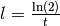
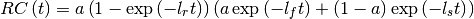

utilities – Collection of handy functions¶
A collection of classes and functions for a variety of purposes, which doesn’t fit in one of the other modules. This combines ease-of-use classes for energy conversion and fine-structure level representation, a class for modeling a release curve, as well as functions for working with an ND-array of callable objects, a rounding function and a function to loop over all entry indexes in a multidimensional matrix.
Code documentation¶
Module author: Wouter Gins <wouter.gins@fys.kuleuven.be>
- class satlas.utilities.Energy(value, unit='cm-1')[source]¶
Ease-of-use class to represent energy and frequencies. Uses automatic conversion to a series of units.
Parameters: - value (float) – Value of the energy or frequency to be converted/worked with.
- unit (string, {cm-1, MHz, eV, nm}) – String denoting the unit for the given value. Default value is inverse centimeters (cm-1).
- class satlas.utilities.Level(energy, hyp_par, L, S, J)[source]¶
Ease-of-use class for representing a level.
Parameters: - energy (float) – Fine structure energy in eV.
- hyp_par (list of 2 floats) – Hyperfine parameters [A, B] in MHz.
- S, J (L,) – Spin quantum numbers.
- class satlas.utilities.ReleaseCurve(amp=40000000.0, a=0.9, tr=0.078, tf=0.396, ts=1.905, pulses=3, delay=10.0, cont=True)[source]¶
Creates a callable object for the standard release curve. Formula based on J.P. Ramos et al. [RGM+14]. Input parameters are initialized to an 35Ar release curve.
Parameters: - amp (float,) – Influences the height of the curve, roughly the maximum of the release rate. Is also an attribute. Default: 4E7
- a (float between 0 and 1) – Weighting of the different exponentials in the formula. Is also an attribute. Default: 0.9
- tr (float) – Time constant parameter in seconds. The attribute is saved as the corresponding l-parameter. Default: 78 ms
- tf (float) – Time constant parameter in seconds. The attribute is saved as the corresponding l-parameter. Default: 396 ms
- ts (float) – Time constant parameter in seconds. The attribute is saved as the corresponding l-parameter. Default: 1905 ms
- pulses (integer) – Number of pulses seperated by the delay parameter. Has no effect if the cont parameter is True. Is also an attribute. Default: 3
- delay (float) – Seconds between pulses. Is also an attribute. Default: 10.0 s
- cont (bool) – Continuously generate pulses seperated by the delay parameter if True, else create the number of pulses given in the pulses parameter. Is also an attribute. Default: True
Note
The l-parameters are related to the t-parameters through . The release curve is modeled as:

- FitToData(t, y, yerr)[source]¶
If a release curve is measured as a function of time, this should fit the parameters to the given curve y(t) with errors yerr.
Parameters: - t (array_like) – Timevector of the measurements.
- y (array_like) – Counts corresponding to t.
- yerr (array_like) – Counting errors of y.
Warning
This method has not been tested!
- satlas.utilities.callNDArray(arr, arg)[source]¶
Goes over each subarray in the first dimension, and calls the corresponding argument. Returns the values itself if the entry is not callable.
Parameters: - arr (NumPy array) – Array containing a mix of callable and not-callable entries.
- arg (misc) – Argument to be passed to each callable entry.
Returns: Array with the callable entries replaced by the returned value.
Return type: NumPy array
- satlas.utilities.round2SignifFigs(vals, n)[source]¶
Code copied from http://stackoverflow.com/questions/18915378/rounding-to-significant-figures-in-numpy Goes over the list or array of vals given, and rounds them to the number of significant digits (n) given.
Parameters: - vals (array_like) – Values to be rounded.
- n (integer) – Number of significant digits to round to.
Note
Does not accept: inf, nan, complex
Example
>>> m = [0.0, -1.2366e22, 1.2544444e-15, 0.001222] >>> round2SignifFigs(m,2) array([ 0.00e+00, -1.24e+22, 1.25e-15, 1.22e-03])
- satlas.utilities.state_number_enumerate(dims, state=None, idx=0)[source]¶
Create the indices for the different entries in a multi-dimensional array. Code copied from the QuTiP package.
Parameters: shape (tuple) – Describes the shape of the multi-dimensional array. Returns: Tuple with each entry being a tuple containing the indices. Return type: tuple